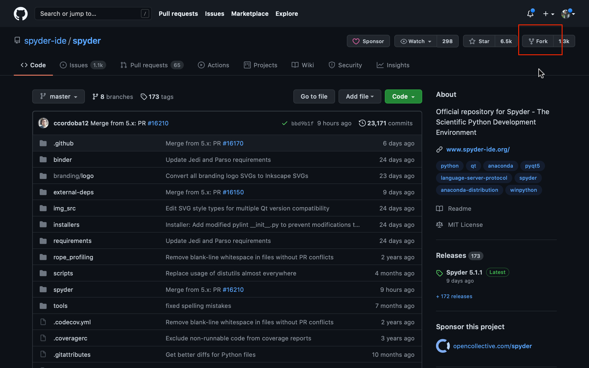
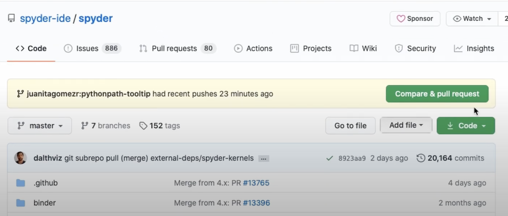

Contributing to Spyder#
This section will help you to set up an environment for contributing to Spyder as well as creating third party Spyder Plugins.
First contribution#
If this is your first time contributing to Spyder or in general to open source we invite you to watch the video below which will guide you with the main steps with doing your first contribution.
For a detailed explanation, follow the instructions below.
Clone and Fork the repository#
The first thing you need to do fork Spyder’s repository. To do this, log into your account on GitHub and click the “Fork” button at the top left of the project’s page. This will create a copy of the repository in your own account.

Then, click the Clone or Download button on your repository and copy the link.
After that, run the following on the command line (or Git Bash, if you’ve installed Git for Windows) to clone the repo:
git clone <LINK-TO-YOUR-REPO>
Set the upstream remote to the official Spyder repo with:
git remote add upstream https://github.com/spyder-ide/spyder.git
This will allow you to keep your local repo up to date with the latest changes in Spyder.
For a beginner guide on using Git, check the link below:
Create a conda environment or virtualenv#
If you use Anaconda you can create a conda environment with the following commands:
conda create -n spyder-dev python=3
conda activate spyder-dev
You can also use virtualenv on Linux, but conda is strongly recommended:
mkvirtualenv spyder-dev
workon spyder-dev
Installing dependencies#
After you have created your development environment, you need to install Spyder’s necessary dependencies. The easiest way to do so (with Anaconda) is
conda install -c spyder-ide/label/dev --file requirements/conda.txt
This installs all Spyder’s dependencies into the environment.
If you are running on macOS, you will also need to install python.app.
conda install python.app
If using pip and virtualenv (not recommended), you need to cd to the directory where your git clone is stored and run:
pip install -e .
Running Spyder#
To start Spyder directly from your clone, i.e. without installing it into your environment, you need to run (from the directory you cloned it to e.g. spyder):
python bootstrap.py
Note that if you are running on macOS, you will need to call pythonw instead of python.
To start Spyder in debug mode, useful for tracking down an issue, you can run:
python bootstrap.py --debug
Commit your changes#
Once you make your changes to the repository, you have to create a branch for your work.
NOTE If your change is small, like a bug fix or minor UI improvement, you should make it to the branch for the current version of Spyder, in this case “5.x”, instead of master. You need to base your new branch on the correct Spyder branch in order to avoid conflicts.
Here, we will explain how to do it with 5.x.
Run:
git checkout 5.x
Make sure to reset the Spyder configuration file when switching between master and 5.x by running:
python bootstrap.py -- --reset
Next, create your branch from this one. Remember to give your branch a name that is related to your fix. For this, run the following command:
git checkout -b [BRANCH-NAME]
Add and commit your changes with a descriptive message.
git commit -a -m “[MESSAGE]”
Finally, push your new branch with your changes to your fork on GitHub:
git push -u origin pythonpath-tooltip
Enter your GitHub username and password if requested.
Opening a PR#
Now, you can submit your changes to Spyder’s repo.
Go to the Spyder repository on GitHub, and you will see the option to open a Pull Request. Before submitting it, make sure that you read the template.

Make sure that you select the correct branch to merge your changes.
Other ways to contribute#
If you don’t feel comfortable with starting with a code contribution, there are other ways in which you can help. Here are some of them:
Issue testing and triaging#
Go to our issue tracker and do one of the following:
Check if older bugs are still present
Find duplicate issues and link related ones
Label issues correctly
Reviewing PRs#
Visit our Pull Requests and:
Test the changes proposed in the PR
Review the style and content of the PR
Translations: Crowdin#
We welcome your help translating Spyder’s interface into different languages. For this purpose we use Crowdin, which provides a simple web based interface for translators, proofreaders and managers, so everyone can help us translate Spyder into any language.
Improving documentation#
We also have a docs repository to which you can also contribute in several ways:
Read tutorials and report confusing parts or missing parts.
Finding type-os or minor errors and report them as issues.
Write your own content if you see something missing.
Participating in the community#
We invite you to be an active member of our community by:
Following our social media
Sharing relevant content
Participating in discussions